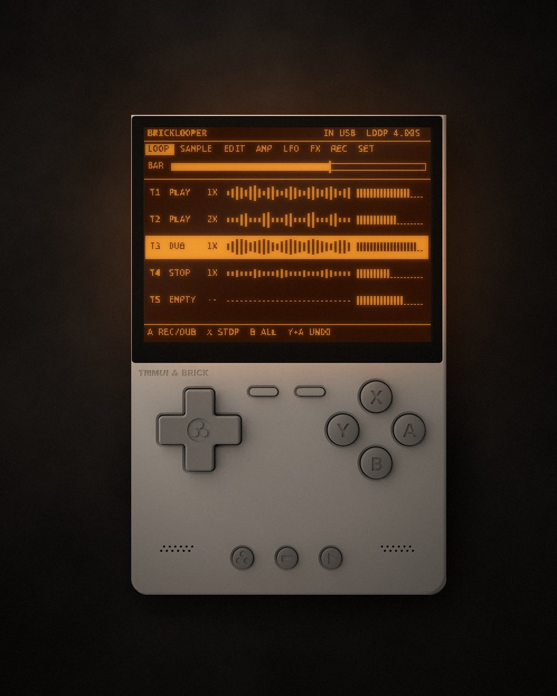
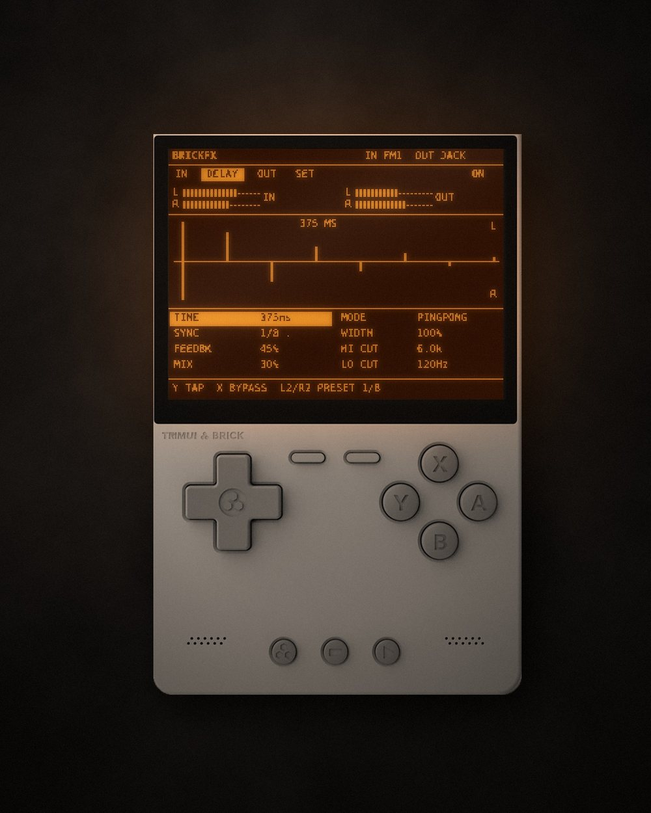

BRICKSAMPLER
v1.4 · FreeAn 80s/90s-style sampler. Record from the mic, loop and chop what you caught, play it from 16 pads or across a keyboard, then shape it with an LFO and the FX section. 8 ms from key to sound.
See BrickSamplerFree music apps for the TrimUI Brick · KNULLI
BrickWorld is a small set of apps that turn the TrimUI Brick into music hardware. A sampler you play from pads or a MIDI keyboard, a loop station to stack up your ideas, and a stereo effects unit for any sound you put into it. Same dot-matrix screen, same buttons, same way of working.
All of them are free and open source. No paid version, no ads, no sign-up. I make them for fun and for my own setup, and I'm happy to share them.
An 80s/90s-style sampler. Record from the mic, loop and chop what you caught, play it from 16 pads or across a keyboard, then shape it with an LFO and the FX section. 8 ms from key to sound.
See BrickSampler
A five-track loop station, with all of BrickSampler inside. Record from USB, from the pads, or both. Overdub, undo, and every track stays in time with the first one.
See BrickLooper
A stereo effects unit. Plug in a USB synth, or any sound through a USB audio interface, and it comes out of the jack with effects on it. Four effects in a chain: drive, modulation, delay and reverb.
See BrickFXAll you need is a TrimUI Brick, a small handheld console. The apps run on KNULLI, a free system you put on the Brick's SD card. Plug in a MIDI keyboard or a USB audio interface and you have a sampler, a looper and an effects unit in your pocket.
[REFERRAL LINK] · This is an affiliate link: if you buy through it, I get a small commission and you pay the same price. It helps me keep the apps free.
I'm Alessandro Pietrosanti, a photographer based in London.
I make these apps for my own music setup: a MIDI keyboard, a small console and a cable into the audio interface. When they work well for me, I share them, free for everyone. The code is open too, under the GPL-3.0 licence.
If you like them and want to say thanks, you can buy me a coffee on Ko-fi. Follow @brickworld_hub on Instagram for news and new versions.
— Alessandro Pietrosanti